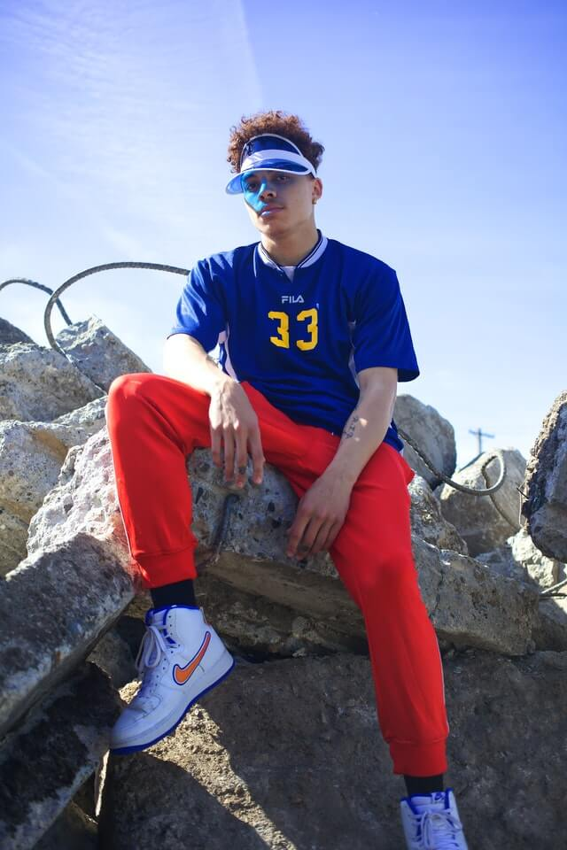

|
Nathan Thomas |
https://www.pexels.com/ja-jp/photo/3019349/ |
 |
Pixabay |
https://www.pexels.com/ja-jp/photo/157675/ |
|  |
Jermaine Ulinwa |
https://www.pexels.com/ja-jp/photo/3193731/ |
 |
Chloe Kala |
https://www.pexels.com/ja-jp/photo/1043474/ |
 |
Andrea Piacquadio |
https://www.pexels.com/ja-jp/photo/3760274/ |
 |
Free-Photos |
https://pixabay.com/ja/photos/%E7%94%B7-%E5%B0%91%E5%B9%B4-%E8%82%96%E5%83%8F%E7%94%BB-%E9%87%91%E9%AB%AA-919045/ |
|
Free-Photos |
https://pixabay.com/ja/photos/%E7%94%B7-%E5%BA%A7%E3%81%A3%E3%81%A6%E3%81%84%E3%82%8B-%E8%85%95%E3%82%92%E7%B5%84%E3%82%93%E3%81%A7-1209137/ |
|
RoyalAnwar |
https://pixabay.com/ja/photos/%E3%83%A2%E3%83%87%E3%83%AB-%E5%AE%9F%E6%A5%AD%E5%AE%B6-%E4%BC%81%E6%A5%AD-2911363/
|
 |
Lukas |
https://www.pexels.com/ja-jp/photo/292999/ |
 |
Tama66 |
https://pixabay.com/ja/photos/%E3%82%B8%E3%83%BC%E3%83%B3%E3%82%BA-%E3%83%91%E3%83%B3%E3%83%84-%E3%82%B9%E3%82%BF%E3%82%A4%E3%83%AB-%E7%94%B7-4050815/ |
 |
qiye |
https://pixabay.com/ja/photos/%E5%8D%97%E4%BA%AC-%E3%82%B9%E3%82%BF%E3%82%B8%E3%82%AA-%E3%82%B8%E3%83%BC%E3%83%B3%E3%82%BA-7866/ |
 |
OpenClipart-Vectors |
https://pixabay.com/ja/vectors/%E9%9D%B4-%E5%B1%A5%E7%89%A9-%E3%82%B9%E3%83%8B%E3%83%BC%E3%82%AB%E3%83%BC-153310/ |
 |
nuzree |
https://pixabay.com/ja/photos/%E3%83%96%E3%83%BC%E3%83%88-%E9%9D%A9-%E9%9D%B4-%E5%8F%A4%E3%81%84-250012/ |
 |
stevepb |
https://pixabay.com/ja/photos/%E9%9D%B4-%E5%B1%A5%E7%89%A9-%E3%83%8F%E3%82%A4%E3%82%AD%E3%83%B3%E3%82%B0-%E3%82%B7%E3%83%A5%E3%83%BC%E3%82%BA-584850/ |
|
luisapiu |
https://pixabay.com/ja/photos/%E7%94%B7-%E8%8A%B1-%E7%BE%8E%E5%AE%B9-%E3%83%A2%E3%83%87%E3%83%AB-%E7%BE%8E%E3%81%97%E3%81%84-1769690/ |
 |
natashamariecan |
https://pixabay.com/ja/photos/%E9%9D%92-%E3%83%99%E3%82%B9%E3%83%88-%E3%83%95%E3%82%A1%E3%83%83%E3%82%B7%E3%83%A7%E3%83%B3-%E7%94%B7%E6%80%A7-1025422/ |
 |
Jens Mahnke |
https://www.pexels.com/photo/gray-and-black-la-embroidered-fitted-cap-844867/ |
 |
Stephen Niemeier |
https://www.pexels.com/photo/black-framed-clubmaster-style-eyeglasses-131018/ |
https://www.pexels.com/ja-jp/photo/3778560/
https://www.pexels.com/ja-jp/photo/1043473/
https://www.pexels.com/ja-jp/photo/2531553/
https://www.pexels.com/ja-jp/photo/652352/
https://www.pexels.com/ja-jp/photo/3839254/
https://www.pexels.com/ja-jp/photo/1300550/
https://www.pexels.com/ja-jp/photo/1303862/
https://www.pexels.com/ja-jp/photo/1096849/